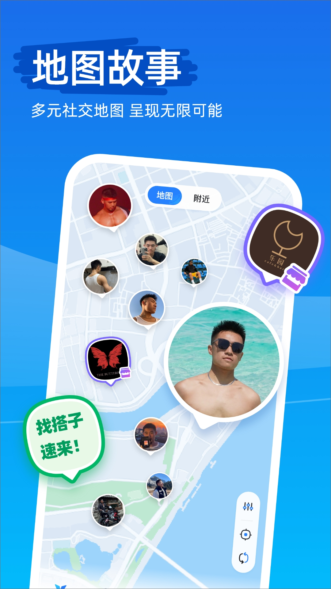

从一张地图到一个社区——Clue 彩虹友好地图的迭代观察
Clue 从最初的地图发现工具走到今天的真人认证社区，团队在每一步都在做同一个选择：宁可少一些，也要干净一些。这是一篇从产品迭代角度复盘它成长逻辑的文章。
现状：这版 Clue 站在什么位置
现在从Clue官网访问的最新版本来看，它不是一个单纯的地图应用——它是一张叠了三层东西的彩虹友好地图：底层是据点标记，中间是带定位的动态故事，最上面是真人认证过的附近用户头像。三层叠加，让"发现好地方"这件事从"自己看"变成了"大家一起看"。
它的核心设计哲学很清晰：没通过真人认证的用户 = 只能看个轮廓。地图上附近的人头像灰着，据点详情页打开不全，动态刷不到。认证通过那一瞬，整个应用像是从大厅走进了房间——所有玩法亮起来：地图上出现真人头像，据点可以导航和打卡，动态可以发带定位的地图故事，标签匹配找人解锁。这个"大厅 → 房间"的门槛设计，是 Clue 和其他彩虹社区最本质的区别。
来路：样本文档没说的部分
样本文档里没有系统的版本 changelog——这点本身就值得注意。很多应用会把"v1.6 新增了 XXX 功能"写在显眼位置，Clue 的文档更像是在记录"现在能做什么"，而不是"什么时候加的"。
从功能堆叠的顺序反推它的迭代路径，我猜大致是这样的：
第一阶段是地图本身。最初的 Clue 可能就只是一张能标记彩虹友好场所的地图——酒吧、民宿、咖啡厅。用户从下载拿包安装后，打开就能看附近有什么好地方。这时候它是"工具"，帮人解决"去哪"的问题。
第二阶段加了真人认证门槛。这是第一个重大转折点——Clue 选择不做开放式匿名社交，把认证做成核心玩法的入场券。这一步直接定义了它的用户画像：愿意花时间提交真人照片、等审核通过的人，才是它要服务的人。代价是用户增长会慢，但换来了一个更干净的环境。
第三阶段社区共建据点。到了这一步，Clue 不再是运营单向维护的"官方地图"——所有通过认证的用户都可以自主创建彩虹据点，填写信息、上传照片、经审核入库。创建的据点会带上"社区共建"标识，其他用户能一眼区分哪些是运营整理的、哪些是社区发现的。这个设计把地图从静态信息变成了动态图谱，大家一起补全友好场所的空白。
样本文档里提到的 v1.6.1 版本号只在客服反馈的问题模板里出现过——说明这个版本是文档编写时的最新版，但版本迭代本身不是产品叙事的重点。Clue 团队更在意的是"功能有没有把体验做好"，而不是"这是第几个版本"。
规律：团队一直在死磕什么
从功能清单能看出 Clue 团队的优先级非常集中。三件事反复出现：真人认证的高门槛、据点社区的共建、地图定位的丝滑。
真人认证这块，Clue文档里能看到完整的打回原因清单——面部遮挡、定位不准、非彩虹友好场所，每条都写得很细。这不是随便写的几条 slogan，是从大量审核案例里提炼出来的。创建据点的审核流程也是机器校验加人工内容审核双重把关。两个审核通道的响应时效都写在文档里（1-3 个工作日），说明团队知道审核速度是用户体验的核心瓶颈，但宁可慢一点也要把门槛守住。
据点社区的共建机制做得很扎实——从"谁能创建"到"怎么创建"到"为什么被打回"到"创建成功后有什么权限"，文档覆盖了完整链路。创建者不能删除自己的据点，删除权限在运营手里；创建者可以补充信息、更新照片，但审核还是要走。这些细节说明团队在放权和把关之间找了一个精确的平衡点：让社区参与建设，但不让社区失控。
地图定位的丝滑体现在很多小地方。一键导航调起的是手机默认地图，不强制用某个导航 App；导航中断后手机地图不受影响，到了目的地回 Clue 继续操作；如果据点地址错了，反馈渠道直接在据点详情页里，不用切到应用设置找客服。这些都是"不让用户想第二次"的设计——你只管发现和打卡，技术细节 Clue 替你兜底。
什么事情 Clue 一直没做？开放式匿名社交（比如匿名帖子、匿名聊天）、内容推荐算法、会员付费解锁更多功能。样本文档里完全没提这些，说明团队没碰——或者说，刻意没碰。在一个很容易被低质量内容污染的领域里，选择"不做"本身就是一种产品态度。
预判：下一步会往哪走
从迭代规律推的话，有几个方向是大概率会出现的。
第一，据点社区的玩法还会加深。现在创建、打卡、点评都有了，但还缺"据点活动"——某个酒吧的周末主题之夜、某家民宿的彩虹友好周，这些如果能和组局功能打通，会让据点从"静态地点"变成"动态场景"。
第二，真人认证的效率可能会提升。现在审核时效是 1-3 工作日，这个速度不算快。如果后续能引入更多机器校验（比如活体检测），同时保留人工兜底的通道，既能加快审核速度，又不牺牲门槛质量。
第三，地图故事的曝光机制可能会有调整。现在同城热门是主要入口，但还没看到"基于据点标签的精准推荐"——比如你常去健身同好的标签，地图上可以自动推送据点附近有哪些健身相关的动态。这个方向如果做起来，会让"发现"这件事从被动刷变成主动匹配。
当然这些都只是从现有迭代逻辑推的，不当官方口径传。Clue 团队到现在为止做的所有选择，都围绕一个核心：让彩虹圈层的线上社交，真正走到线下去。如果这个核心没变，它的下一步也不会跑偏。

资料来源
Clue 的文档维护和应用分发源码同时托管在GitHub、Gitee和GitCode三个平台，国内用户访问后两者通常会更顺畅。